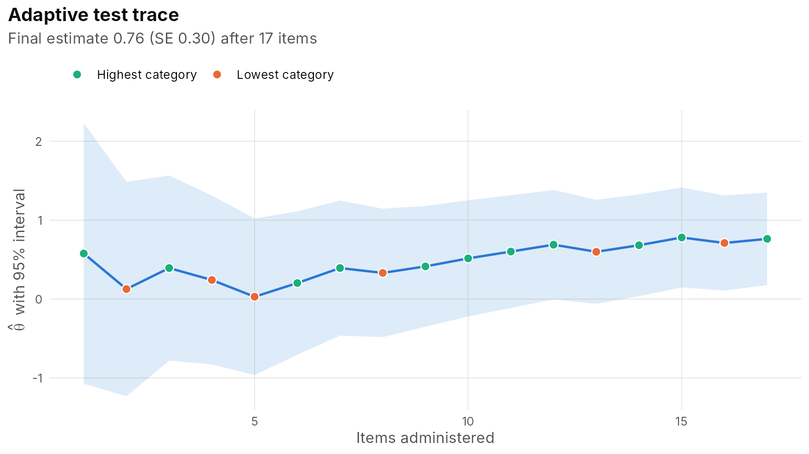
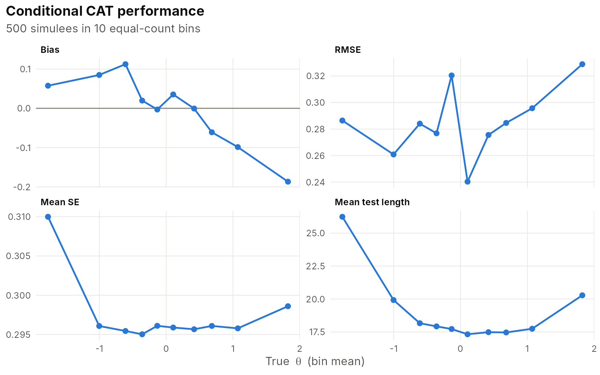
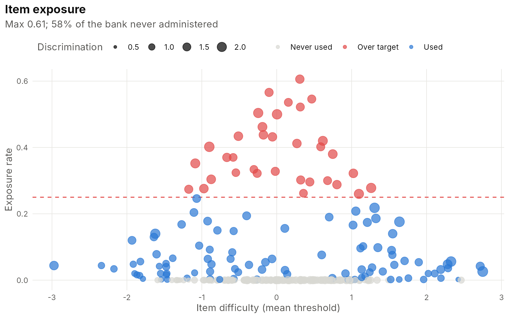
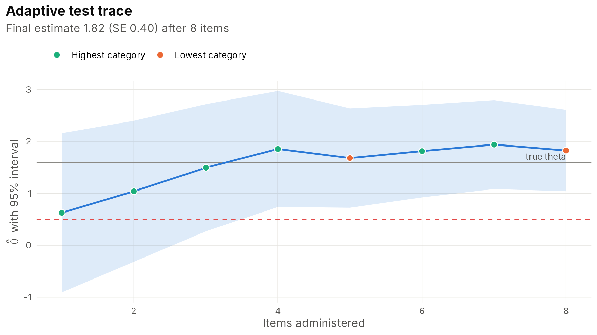

Computerized adaptive testing
adaptive-testing.RmdAn adaptive test chooses each item to be as informative as possible about the person taking it, so it reaches a target precision with far fewer items than a fixed form (Weiss, 1982). IRTistic covers the full workflow, taking ideas and defaults from catR (Magis & Barrada, 2017) and mirtCAT (Chalmers, 2016).
1. An item bank
Use calibrated items from item_bank(fit) or published
parameters from make_bank(). Content areas are
optional.
2. A design
design <- cat_design(bank, select = "MFI", estimator = "EAP",
min_items = 5, max_items = 30, se_target = 0.30,
exposure = "randomesque", randomesque_k = 5,
content_target = c(Algebra = 0.4, Geometry = 0.3, Number = 0.3))
design
#> <cat_design> 300-item bank
#> selection: MFI | estimator: EAP (prior N(0.00, 1.00^2))
#> exposure control: randomesque (k = 5)
#> content balancing: Algebra 40%, Geometry 30%, Number 30%
#> stopping: 5-30 items; SE <= 0.300Selection rules: maximum Fisher information ("MFI"),
posterior-weighted information ("MPWI"), Kullback-Leibler
("KL"), minimum expected posterior variance
("MEPV") and "random". Exposure control:
randomesque, Sympson-Hetter (cat_sympson_hetter()
calibrates the parameters) and a-stratification (strata =).
Stopping rules: test length, SE target and classification against cut
scores (cut =).
3. Running it live
cat_start(), cat_next() and
cat_answer() give the item-by-item loop behind a web form
or a ‘shiny’ app.
s <- cat_start(design)
true_theta <- 0.8
while (!cat_done(s)) {
item <- cat_next(s)
p <- 1 / (1 + exp(-bank$items[[item]]$a * (true_theta + bank$items[[item]]$d / bank$items[[item]]$a)))
s <- cat_answer(s, item, rbinom(1, 1, p))
}
s
#> <cat_session> 17 item(s) administered | theta = 0.763, SE = 0.299 | finished: se_target
#> step item response theta se
#> 8 I069 0 0.332 0.415
#> 9 I297 1 0.414 0.390
#> 10 I040 1 0.516 0.375
#> 11 I011 1 0.602 0.365
#> 12 I288 1 0.689 0.354
#> 13 I271 0 0.599 0.336
#> 14 I070 1 0.682 0.329
#> 15 I130 1 0.780 0.323
#> 16 I152 0 0.711 0.307
#> 17 I105 1 0.763 0.299
plot(s)
4. Simulation studies
sim <- cat_simulate(design, theta = rnorm(500), seed = 1)
summary(sim)
#> CAT simulation: 500 simulees
#> test length: mean 19.0 (SD 3.3), range 15-30
#> stopping reasons: max_items 26, se_target 474
#> mean final SE: 0.297
#> recovery: bias -0.004, RMSE 0.286, r = 0.959
#> exposure: max 0.606, 57.7% of bank unused, test overlap 0.321, chi-square 77.5
irt_table(sim)
#> CAT simulation results
#>
#> Statistic Value
#> Simulees 500
#> Mean test length 19.02
#> SD test length 3.32
#> Mean final SE 0.30
#> Bias -0.00
#> RMSE 0.29
#> Correlation with true <U+03B8> 0.96
#> Maximum exposure rate 0.61
#> % of bank unused 57.67
#> Test overlap rate 0.32
#>
#> Note. Selection: MFI; estimator: EAP; exposure control: randomesque.
plot(sim, "conditional")
plot(sim, "exposure", r_max = 0.25)
5. Classification testing
pass_fail <- cat_design(bank, cut = 0.5, min_items = 8, max_items = 40)
cls <- cat_simulate(pass_fail, theta = rnorm(300), seed = 2)
summary(cls)
#> CAT simulation: 300 simulees
#> test length: mean 17.3 (SD 12.9), range 8-40
#> stopping reasons: classified 236, max_items 64
#> mean final SE: 0.328
#> recovery: bias 0.004, RMSE 0.375, r = 0.936
#> classification accuracy: 95.3%
#> exposure: max 1.000, 75.7% of bank unused, test overlap 0.391, chi-square 100.5
plot(cls, "trace", person = 3)
6. Post-hoc simulation with real data
Pass a complete response matrix instead of theta to find
out how short an adaptive version of an existing test could be.
dat <- sim_irt(400, 40, "grm", ncat = 4)
fit <- irt_fit(dat, "grm", se = "none")
ph <- cat_simulate(cat_design(fit, max_items = 15, se_target = 0.35), responses = as.matrix(dat))
summary(ph)
#> CAT simulation: 400 simulees
#> test length: mean 15.0 (SD 0.1), range 12-15
#> stopping reasons: max_items 399, se_target 1
#> mean final SE: 0.392
#> exposure: max 1.000, 22.5% of bank unused, test overlap 0.776, chi-square 16.1
cor(ph$results$theta, irt_scores(fit)$theta) # agreement with the full 40-item test
#> [1] 0.9631655